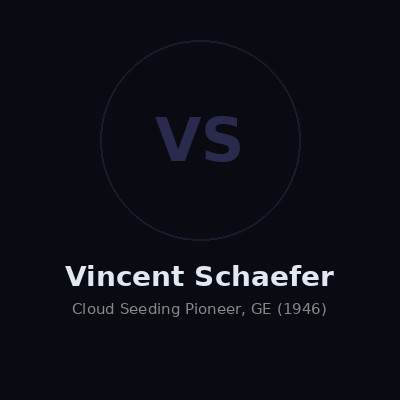
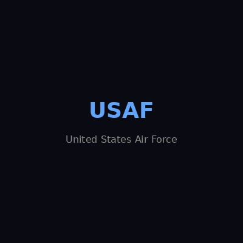
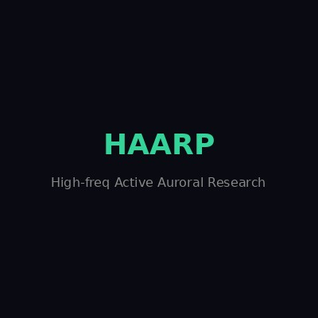
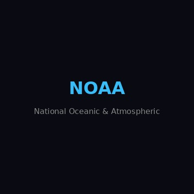
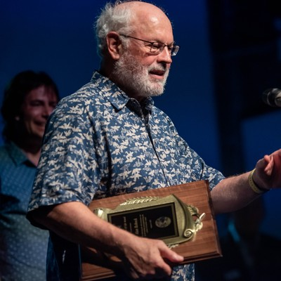

In 1967, the U.S. Air Force flew 2,600 cloud-seeding sorties over Vietnam. It was classified. It was exposed. It caused a treaty. In 1991, a defense contractor patented spraying aluminum in the stratosphere. In 2022, a startup began launching sulfur balloons from Nevada. Nobody stopped them. The war for your sky is not a conspiracy theory — it’s public record.
The word “chemtrails” is a trap.
It was designed to sound ridiculous, and it works — the moment you say it, you’ve lost the room. The conversation is over before it begins. That’s by design.
But here’s the thing: you don’t need that word.
What most people mean when they say “chemtrails” is:
Is the government spraying things in the atmosphere without telling us?
The honest answer is more nuanced than “yes” or “no” — and far more unsettling than either.
None of that requires the word “chemtrails.” It’s all documented. Declassified military records. Active patents. Government reports. Corporate filings. Congressional testimony.
The documented reality is more concerning than the conspiracy theory.
This scroll follows the documents. Every claim is tiered by evidence level. Every source is cited. If something is speculative, it says so. If something is documented, you can read it yourself.
Let’s look at the documents.
Weather modification is not theoretical. Governments have been doing it since 1946. The history is declassified, published, and available to anyone willing to read it.


This is the big one.
The United States weaponized weather in a war zone. It was classified, exposed, confirmed under oath, and caused an international treaty. That is not disputed — it is in the Congressional Record.
This is not fringe history. This is the documented record of governments deliberately modifying weather for military and agricultural purposes across eight decades.
Patents don’t prove deployment. But they prove that serious organizations — including defense contractors — have designed, documented, and filed intellectual property for atmospheric modification technologies.

Oil company → defense subsidiary → defense contractor → defense giant → defense giant. The HAARP patent traveled exclusively through the defense industry until the facility was transferred to the University of Alaska Fairbanks in 2014.
The patent landscape is not consistent with a massive covert program. But the patents exist, the defense contractor chain is real, and the technology has been designed on paper.
While institutions debate governance frameworks, private actors have started deploying. The governance gap isn’t hypothetical — it’s being exploited right now.
37,000 employees
More than the FBI has special agents.

Harvard couldn’t launch a test balloon with calcium carbonate. A startup launched 147 sulfur balloons with nobody’s permission. That is the governance gap in a single sentence.
There is no comprehensive international regulation of stratospheric aerosol injection. The regulatory landscape is “a patchwork of potentially applicable norms,” not a coherent framework. Scientific capacity is advancing faster than governance.

500+ academics from 61 countries signed an Open Letter for an International Non-Use Agreement on Solar Geoengineering (2022). The scientific community is deeply divided. The governance community is barely engaged.
The sky has no locks. The question is not whether someone could spray the atmosphere without telling you. The question is what would stop them.
If you want to be taken seriously on this topic, you have to be honest about what the evidence does and doesn’t support.
Established (Documented):
Not Established:
The question was never whether governments can modify weather. They’ve been doing it since 1946. The question was never whether defense contractors have patented atmospheric modification. They have, and you can read the patents right now.
The real question is: who decides what goes into the air you breathe?
Right now, the answer is: anyone with the money and the will. Because the sky has no locks. No international framework. No comprehensive oversight. Nine U.S. states are seeding clouds and half the reports are wrong. A startup launched 147 sulfur balloons and nobody stopped them. A $60 million company is preparing to spray undisclosed chemicals from aircraft.
The sky is open. The only question is who fills it.
Disclosure is not a single event. It’s a process. And it only works if people look up.